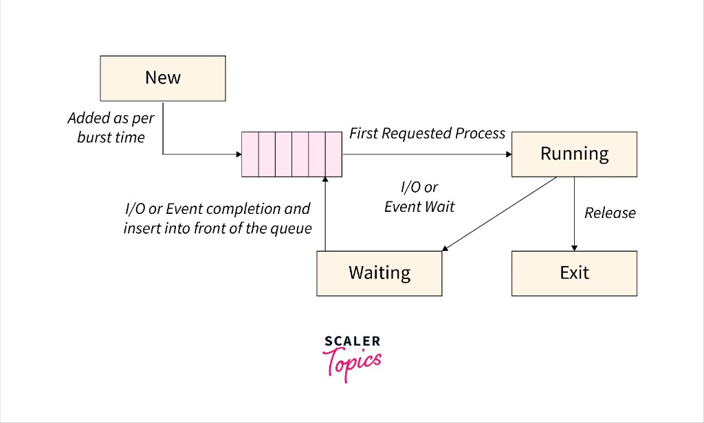
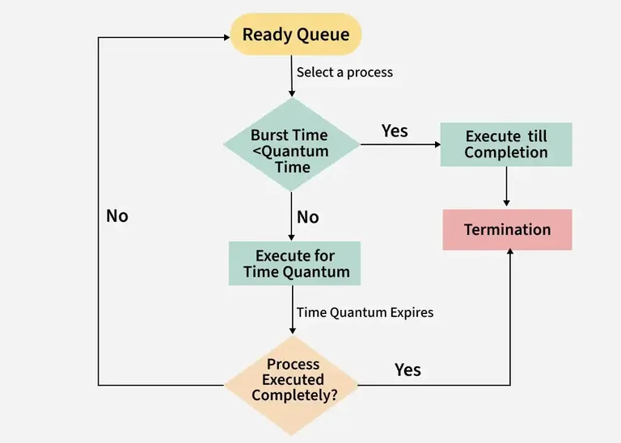
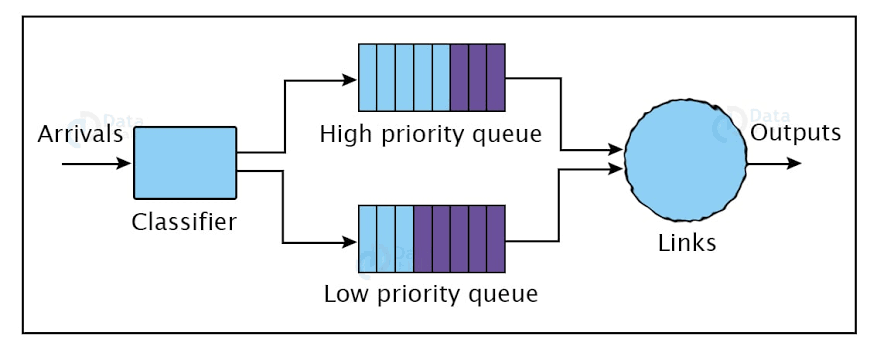

Sisteme de operare · documentație interactivă
Sistem de operare, procese și planificare
Definiție și istoric al SO, componente, clasificare, procese și stări, PCB, algoritmi de planificare (cu scheme) și comenzi pentru pornirea/oprirea proceselor pe Linux și Windows.
0 secțiuni
0 demo-uri
0 întrebări
Teme curs · /



1. Care sunt cele două roluri principale ale unui SO?
Gestionează resursele (CPU, memorie, I/O, stocare) și oferă o interfață între aplicații/utilizator și hardware.
2. Ce este un apel de sistem?
O cerere a unui program din spațiul utilizator către kernel (ex. citire fișier, creare proces), executată în mod privilegiat.
3. Care e diferența dintre stările Ready și Waiting?
Ready — așteaptă CPU și poate rula imediat. Waiting — așteaptă un eveniment/I/O; chiar dacă CPU e liber, nu poate continua încă.
4. Ce rol are PCB la un context switch?
În PCB se salvează starea procesului curent (registre, PC etc.); apoi se încarcă starea următorului proces din PCB-ul său.
5. De ce Round Robin e preferabil față de FCFS pentru aplicații interactive?
RR preemptă job-urile lungi după un quantum, astfel procesele scurte/interactive primesc CPU mai repede (timp de răspuns mai bun).
6. Ce diferență există între kill și kill -9?
kill trimite SIGTERM (închidere cerută, poate fi tratată). kill -9 trimite SIGKILL (oprire forțată, nu poate fi ignorată).7. Ce câmp din ps / tasklist folosiți ca să opriți un proces?
PID (Process ID).
8. Ce face & la finalul unei comenzi în bash?
Rulează comanda în fundal și redă promptul; job-ul poate fi listat cu
jobs.